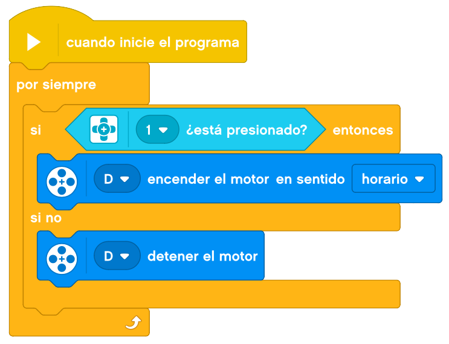

En este tema, construiremos un percutor, del estilo a los martillos neumáticos que abren agujeros en las calles de nuestras ciudades.
Este proyecto también lo vamos a dividir en 3 pasos. Primero haremos la parte de la maquinaria, después le
añadiremos un interruptor para su funcionamiento y por último le añadiremos una empuñadura para poder
sujetarla.
A continuación, mostraremos un ejemplo de construcción de un percutor base.
Empezaremos por crear la estructura donde sujetaremos el motor y la punta percutora.
Si ahora engancháramos un cable del motor al bloque EV3 (recuerda que tiene que ser a una de las letras),
nuestro percutor funcionaría prfectamente.
Para probar la maquinaria, no es necesario programarlo, lo haremos con el bloque, de la siguiente forma.
Desde la pantalla de "Ejecutado Recientemente" vamos a la pantalla de "Aplicaciones", donde seleccionamos
"Motor Control" y nos aparecerá con qué botones manejar cada uno de los motores.
Ya podemos probar la maquinaria del percutor.
Ahora le añadimos el botón para accionarlo.
Enganchamos un cable del botón al bloque EV3 (recuerda que tiene que ser a uno de los números), y probamos el
percutor.
En este caso, lo programaremos para poder accionarlo con el botón. Este es un ejemplo de programación.

Ahora podemos probarlo accionándolo desde el botón.
Ahora le añadimos la empuñadura.
La programación será la misma que en le paso anterior.
Este será el taladro terminado.